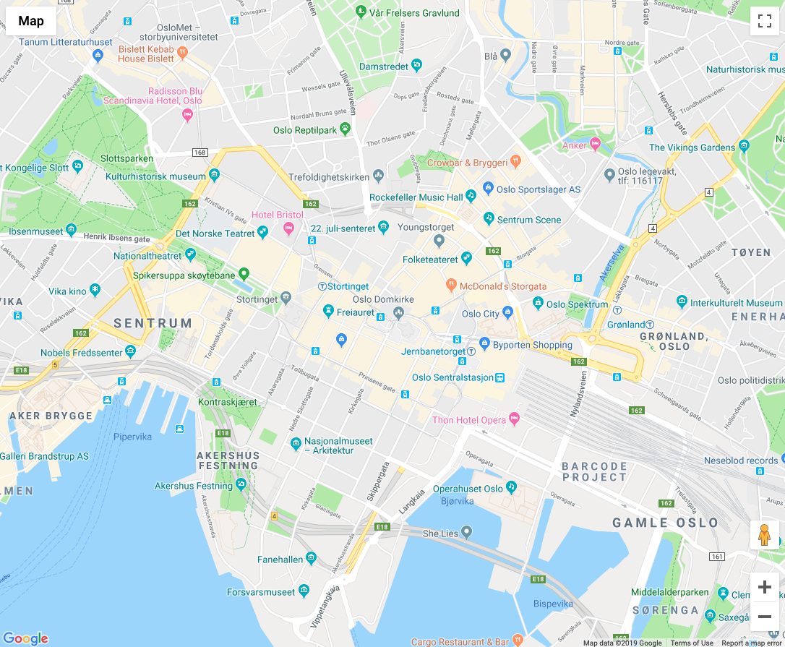
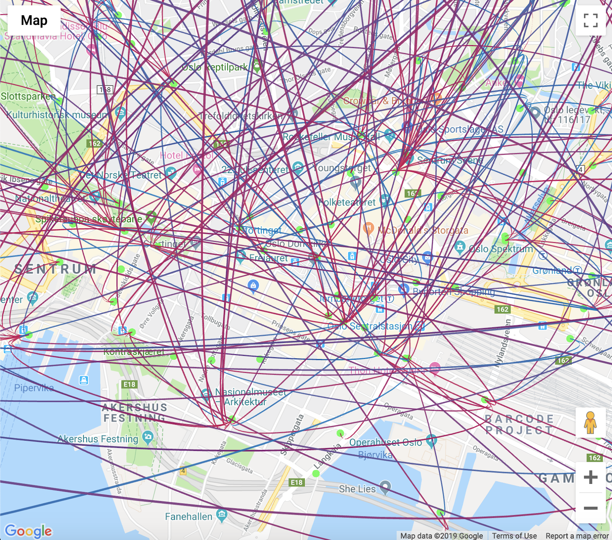

Last Updated: 2019-08-21
deck.gl is a WebGL- powered framework for visual exploratory data analysis of large datasets. deck.gl is designed to make visualization of large data sets simple. It enables users to quickly get impressive visual results with limited effort through composition of existing layers, while offering a complete architecture for packaging advanced WebGL based visualizations as reusable JavaScript layers.
In this codelab, you're going to build a simple web app to visualise data by using Google Maps and deck.gl.
This codelab is focused on Google Maps and deck.gl. Non-relevant concepts and code blocks are glossed over and are provided for you to simply copy and paste.
Our project is based on Google Maps. In order to use it, you'll need to request an API key.
You can use any text editor you like. If you do not have any, we recommend to use Sublime.
By the end of this section, you will get a Google Map view in your project.
Create a file named index.html in your project and copy/paste the following contents:
index.html
<html>
<head>
<style type="text/css">
body {margin: 0; padding: 0; overflow: hidden;}
#container {width: 100vw; height: 100vh;}
#tooltip {position: absolute; z-index: 1; background: #000; color: #fff; font-family: sans-serif; font-size: 11px; padding: 4px; padding: 8px; pointer-events: none;}
</style>
</head>
<body>
<div id="container"></div>
</body>
<script type="text/javascript">
// app script
</script>
</html> Next, we need to tell the browser about our Deck.gl dependency by adding a <script src="..". Add the following line to the <head> element in your index.html file.
index.html
<script src="https://unpkg.com/deck.gl@^7.0.0/dist.min.js"></script>Add the following line to the <head> of your index.html file and replace Map_Key with your API key from Google Cloud Console
index.html
<script src="https://maps.googleapis.com/maps/api/js?key=Map_Key&libraries=visualization&v=3.34"></script>Add the following code below </body> tag of your index.html file:
index.html
<script type="text/javascript">
const map = new google.maps.Map(document.getElementById('container'), {
center: {lat: 59.9127, lng: 10.7461},
zoom: 15,
mapTypeControlOptions: {
mapTypeIds: ['roadmap']
}
});
</script>Now you should be able to see Google Maps on your page zoomed in to Oslo:

We will use Oslo City Bike data in this codelab. You can find all data here:
In this tutorial we are going to use stations and tour data. Here is how the data is structured:
stations.json
{
last_updated: 1566058257,
ttl: 10,
data: {
stations: [
{
station_id: "1009",
name: "Borgenveien",
address: "Borgenveien",
lat: 59.942742106473666,
lon: 10.703833031254021,
capacity: 10
}
]
}
}trips.json
[
{
"started_at":"2019-08-01 07:48:19.642000+00:00",
"ended_at":"2019-08-01 07:56:20.358000+00:00",
"duration":480,
"start_station_id":"523",
"start_station_name":"T\u00f8yenbekken",
"start_station_description":"\u00d8st for Gr\u00f8nlands Torg",
"start_station_latitude":59.9115945,
"start_station_longitude":10.7617736,
"end_station_id":"625",
"end_station_name":"Spikersuppa \u00d8st",
"end_station_description":"mot Stortingsgata",
"end_station_latitude":59.91336,
"end_station_longitude":10.737663
}
]The Scatterplot Layer takes in paired latitude and longitude coordinated points and renders them as circles with a certain radius.
Now we can add our first layer of data to the map. Add this code below map code in our script:
index.html
const STATIONS = 'https://gbfs.urbansharing.com/oslobysykkel.no/station_information.json';
const deckOverlay = new deck.GoogleMapsOverlay({
layers: [
new deck.ScatterplotLayer({
data: STATIONS,
dataTransform: d => d.data.stations.filter(f => f),
getPosition: f => [f.lon, f.lat],
getRadius: f => 2,
pickable: true,
radiusMinPixels: 5,
getColor: f => [51, 255, 60]
})
]
});
deckOverlay.setMap(map);radiusMinPixels (Number, optional)
The minimum radius in pixels. This prop can be used to prevent the circle from getting too small when zoomed out.
getPosition (Function, optional)
Method called to retrieve the position of each object.
getRadius (Function|Number, optional)
The radius of each object, in meters.
For more information check out documentation:
Now we should be able to see bike station positions on the map:
The Arc Layer renders raised arcs joining pairs of source and target points, specified as latitude/longitude coordinates.
Oslo City bicycle generates a lot of data every day. To simplify our task, we are going to use data from trip in Oslo for one day for a time between 8 a.m and 9 a.m:
index.html
const TRIPS ='https://kristina-simakova.github.io/deckgl-demo/trips.json';Now we can add another layer of data to layers array:
index.html
new deck.ArcLayer({
id: 'arcs',
data: TRIPS,
getSourcePosition: f => [f.start_station_longitude,f.start_station_latitude],
getTargetPosition: f => [f.end_station_longitude, f.end_station_latitude],
getSourceColor: [0, 128, 200],
getTargetColor: [200, 0, 80],
getWidth: 2
})getWidth (Function|Number, optional)
The line width of each object, in units specified by widthUnits (default pixels).
getSourcePosition (Function, optional)
Method called to retrieve the source position of each object.
getTargetPosition (Function, optional)
Method called to retrieve the target position of each object.
For more information check out documentation:
Now we should be able to see all trips made on the 1st of August from 8 a.m to 9 a.m:

Use Styling Wizard to customize your map and data visualisation. This tool can help to customize colors, roads and labels. You can also hide maps features. Check out Styling Wizard and create your own style:
Add generated json object in <script> element inside <head>
index.html
<script id="map-style" type="application/json">
[
{
"elementType": "geometry",
"stylers": [{"color": "#212121"}]
},
{
"elementType": "labels.icon",
"stylers": [{"visibility": "off"}]
},
{
"elementType": "labels.text.fill",
"stylers": [{"color": "#757575"}]
},
{
"elementType": "labels.text.stroke",
"stylers": [{"color": "#212121"}]
},
{
"featureType": "administrative",
"elementType": "geometry",
"stylers": [{"color": "#757575"}]
},
{
"featureType": "administrative.country",
"elementType": "labels.text.fill",
"stylers": [{"color": "#9e9e9e"}]
},
{
"featureType": "administrative.locality",
"elementType": "labels.text.fill",
"stylers": [{"color": "#bdbdbd"}]
},
{
"featureType": "poi",
"elementType": "labels.text.fill",
"stylers": [{"color": "#757575"}]
},
{
"featureType": "poi.park",
"elementType": "geometry",
"stylers": [{"color": "#181818"}]
},
{
"featureType": "poi.park",
"elementType": "labels.text.fill",
"stylers": [{"color": "#616161"}]
},
{
"featureType": "poi.park",
"elementType": "labels.text.stroke",
"stylers": [{"color": "#1b1b1b"}]
},
{
"featureType": "road",
"elementType": "geometry.fill",
"stylers": [{"color": "#2c2c2c"}]
},
{
"featureType": "road",
"elementType": "labels.text.fill",
"stylers": [{"color": "#8a8a8a"}]
},
{
"featureType": "road.arterial",
"elementType": "geometry",
"stylers": [{"color": "#373737"}]
},
{
"featureType": "road.highway",
"elementType": "geometry",
"stylers": [{"color": "#3c3c3c"}]
},
{
"featureType": "road.highway.controlled_access",
"elementType": "geometry",
"stylers": [{"color": "#4e4e4e"}]
},
{
"featureType": "road.local",
"elementType": "labels.text.fill",
"stylers": [{"color": "#616161"}]
},
{
"featureType": "transit",
"elementType": "labels.text.fill",
"stylers": [{"color": "#757575"}]
},
{
"featureType": "water",
"elementType": "geometry",
"stylers": [{"color": "#000000"}]
},
{
"featureType": "water",
"elementType": "labels.text.fill",
"stylers": [{"color": "#3d3d3d"}]
}
]
</script>Now add styles to the map object:
index.html
const map = new google.maps.Map(document.getElementById('container'), {
center: {lat: 59.9127, lng: 10.7461},
zoom: 15,
styles: JSON.parse(document.getElementById('map-style').innerText),
mapTypeControlOptions: {
mapTypeIds: ['roadmap']
}
});Congratulations, you've successfully completed this tutorial.
You used Google Maps and Deck.gl to visualise trip data from Oslo City Bike. You also learnt how to style Google Maps and hide features.